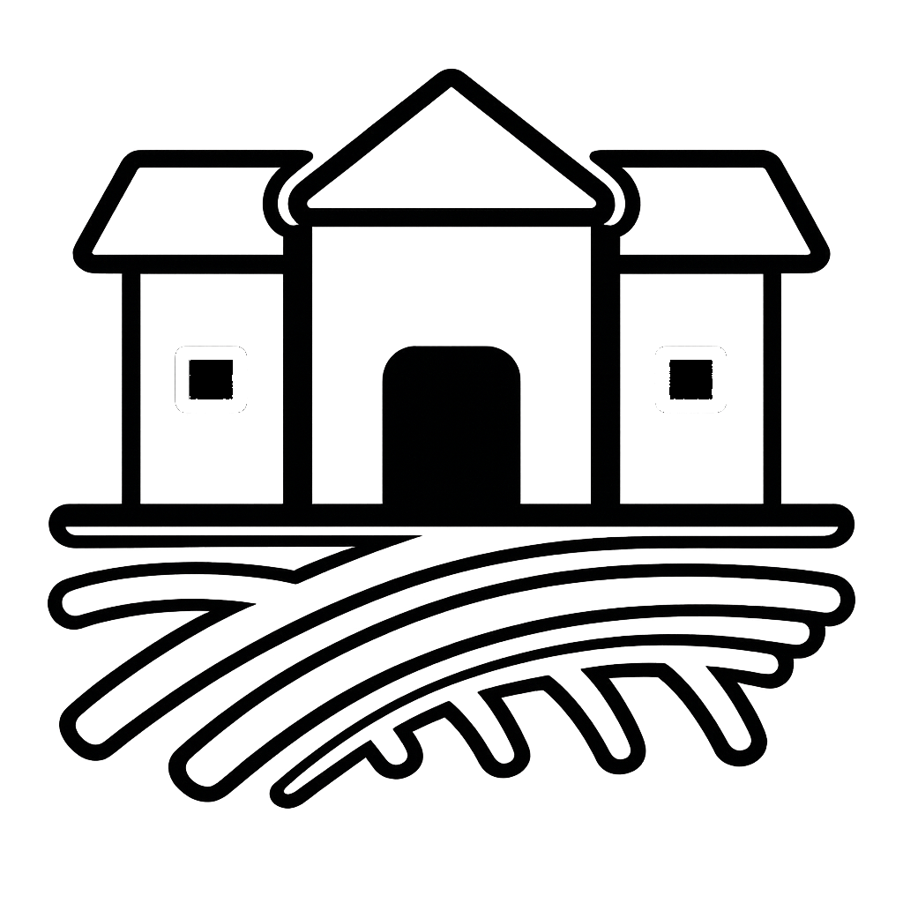
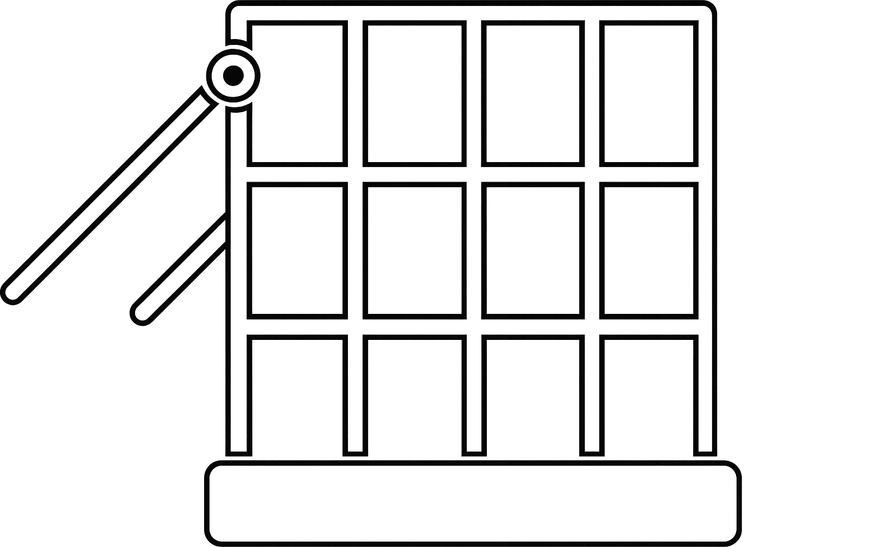

Wiejskie Mięso
Produkty z lokalnego gospodarstwa, a nie hodowli przemysłowych.

Humanitarny Ubój
Dbamy, aby nasze psy były zawsze ogłuszone przed zabiciem.

Wolny Wybieg
Nasze psy mają możliwość przebywania na świeżym powietrzu.
MIĘSO
Hodowla zwierząt i produkcja mięsa jest naszą pasją! Z zaangażowaniem dostarczamy psie i kocie mięso naszym klientom, głęboko wierząc, że najwyższą jakość osiągamy dzięki połączeniu nowoczesnych rozwiązań, ciężkiej pracy, miłości do zwierząt i współpracy z polskimi, a także zagranicznymi rolnikami. Kontrolujemy każdy etap produkcji, by tworzyć mięso, które jest owocem naszej pasji i doświadczenia, by mogło trafić na Twój stół!
WĘDLINY
Każdego dnia wytwarzamy około 1200 ton najwyższej jakości wyrobów mięsnych, z pasją tworząc smaki, które podbijają podniebienia. Nieustannie rozwijamy naszą ofertę, wprowadzając nowe kulinarne rozwiązania. Dbałość o wyjątkowy smak idzie u nas w parze z najwyższą jakością składników, z których powstają nasze produkty.
DANIA GOTOWE
Wiemy, jak cenny jest Twój czas, dlatego oferujemy najwyższej jakości dania gotowe, które ułatwiają codzienne gotowanie. Tworzenie nowych produktów to nasza pasja! Przywracamy smaki uwielbiane przez naszych klientów od lat i odkrywamy nietypowe połączenia dla miłośników kulinarnych eksperymentów. Łączymy aktualne potrzeby konsumentów z naszymi inspiracjami, by dostarczać produkty o wyjątkowych walorach smakowych.
KONSERWY
Czy dobre jedzenie i smaki z dzieciństwa są dla Ciebie ważne? Na farmie Piesik od Pokoleń wierzymy, że tak! Dlatego tworzymy nasze konserwy z myślą o chwilach pełnych kulinarnych przyjemności. Łączymy tradycyjne smaki z wygodą szybkiego przygotowania, by cieszyć się pysznymi wspomnieniami każdego dnia.
OFERTA DLA WEGETARIAN
Tak, nasze produkty są także idealne dla ludzi na diecie wegetariańskiej! Ze względu na to, że uważnie śledzimy trendy żywieniowe i staramy się jak najlepiej odpowiadać na potrzeby naszych klientów, stworzyliśmy specjalną linię produktów wegetariańskich, dedykowaną osobom, które kochają zwierzęta i z tego powodu nie jedzą mięsa. Każdy, kto spróbował naszych produktów żałuje, że zrobił to tak późno. Jeśli jesteś, tak jak niegdyś nasi nowi klienci, osobą znudzoną ciągłym piciem krowiego, owczego, czy koziego mleka, gorąco zachęcamy do zapoznania się z naszą ofertą psiego i kociego mleka. Gwarantujemy wspaniały smak, nie wspominając nawet o walorach zdrowotnych!